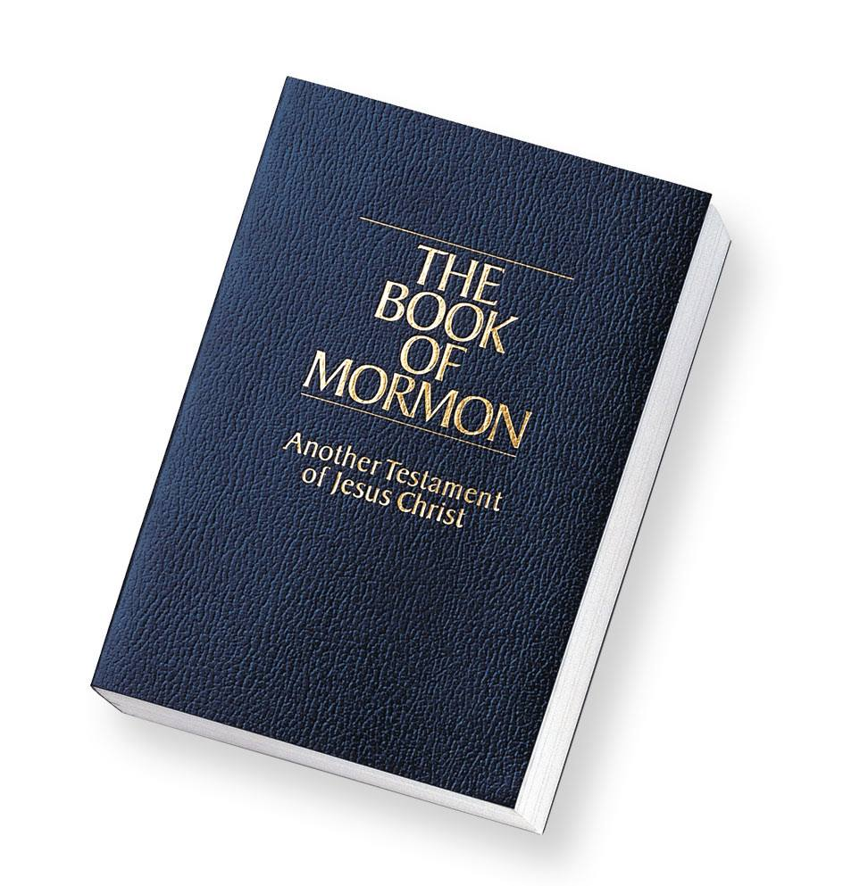

2 Nephi 2:2
Nevertheless, Jacob, my firstborn in the wilderness, thou knowest the greatness of God; and he shall consecrate thine afflictions for thy gain.
Alma 5:1-5
Now it came to pass that Alma began to deliver the word of God unto the people, first in the land of Zarahemla, and from thence throughout all the land.
1 Nephi 3:7
And it came to pass that I, Nephi, said unto my father: I will go and do the things which the Lord hath commanded, for I know that the Lord giveth no commandments unto the children of men, save he shall prepare a way for them that they may accomplish the thing which he commandeth them.
Mosiah 5:5
And we are willing to enter into a covenant with our God to do his will, and to be obedient to his commandments in all things that he shall command us, all the remainder of our days, that we may not bring upon ourselves a never-ending torment, as has been spoken by the angel, that we may not drink out of the cup of the wrath of God.
Helaman 7:7
Oh, that I could have had my days in the days when my father Nephi first came out of the land of Jerusalem, that I could have joyed with him in the promised land; then were his people easy to be entreated, firm to keep the commandments of God, and slow to be led to do iniquity; and they were quick to hearken unto the words of the Lord.
Helaman 10:4
Blessed art thou, Nephi, for those things which thou hast done; for I have beheld how thou hast with unwearyingness declared the word, which I have given unto thee, unto this people. And thou hast not feared them, and hast not sought thine own life, but hast sought my will, and to keep my commandments.